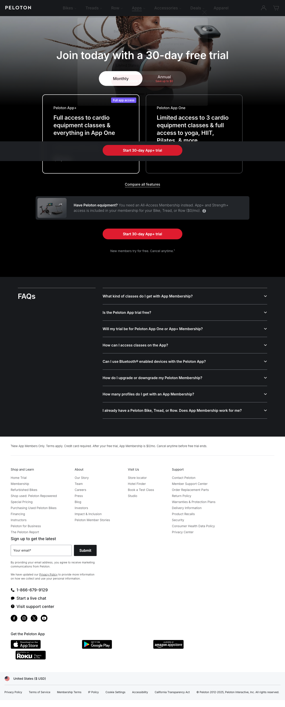

Pricing Page Visual

Peloton's official App Membership page shows app membership options, then separates customers with Peloton equipment into All-Access Membership logic.
The mechanism to notice is the equipment trigger: Bike, Tread, or Row ownership changes the relevant recurring membership state.
Screenshot captured: 2026-05-03 · Source reviewed: 2026-05-03
Core Insight
Buying Peloton equipment changes the customer's pricing state: the purchase is not the end of the bill.
Pricing Logic Deconstruction
The bill changes when the customer crosses from app-only access into connected-equipment ownership.
Bike, Tread, or Row ownership moves the customer into a different membership state.
The pricing mechanism is a boundary crossing, not a generic hardware comparison.
The equipment is designed around connected classes, metrics, and software-enabled experience.
The customer's real cost shifts from a one-time equipment anchor to long-term connected fitness access.
Strategic Logic
Hypothesized pricing-relevant causal logic. Not proof.
Pricing Mechanism Logic
Primary component: trigger_path
Lower-friction digital access before equipment ownership.
The customer buys Bike, Tread, or Row hardware.
Equipment ownership makes the recurring membership layer relevant.
The customer evaluates access over time, not only hardware price.
Membership value must stay visible as usage changes.
Bill Examples
Customer bill scenarios showing how the trigger path changes total cost exposure without inventing exact lifetime prices.
| Scenario | Base layer | Variable layer | Final bill logic | Pricing lesson |
|---|---|---|---|---|
| App-only user | App One or App+ membership | No Peloton equipment purchase or All-Access Membership required. | Customer cost exposure = app membership price, plus any promotional adjustment where applicable. | App access creates a low-friction entry point without triggering connected-equipment membership economics. |
| Connected equipment owner | Connected equipment purchase price | All-Access Membership becomes the recurring access layer for the equipment experience. | Customer cost exposure = equipment purchase or financing + recurring All-Access Membership + applicable extras. | The equipment purchase changes the customer's pricing state from app access to recurring connected fitness membership. |
| Higher-end equipment buyer | Higher hardware model price | Recurring All-Access Membership remains attached to the connected experience. | Customer cost exposure = higher equipment cost + recurring membership + financing or accessory effects where applicable. | Premium hardware can raise willingness to pay, but the long-term value claim still depends on recurring usage and membership value. |
Pricing Architecture
Public pricing structure reviewed May 3, 2026. Scope: connected equipment purchase, All-Access Membership, app membership comparison anchor, financing, and total ownership cost perception.
The bill combines one-time hardware exposure with recurring access logic.
Customers are segmented by access mode, equipment ownership, model choice, financing, and household usage.
The dominant driver remains connected equipment ownership and membership dependency.
Each boundary changes how the customer perceives cost exposure over time.
Boundary Crossing Map
Where the customer crosses into a different pricing state.
Decision Tension Layer
Hardware can lower entry friction while making lifetime membership cost more salient.
Decision Alternatives
Concrete pricing-system moves, trade offs, and leading indicators.
Pricing move: Show customers a clear equipment plus membership cost preview before purchase, with monthly and multi-year views.
Effect: Reduces surprise after purchase and improves trust in the hardware-to-membership model.
Trade off: May make long-term cost more salient and reduce conversion among price-sensitive buyers.
Signal: Higher checkout comprehension, fewer post-purchase membership objections, and lower early cancellation intent.
Pricing move: Show equipment owners personalized usage, progress, household activity, and feature value tied to their All-Access Membership.
Effect: Improves perceived membership value and reduces churn among lower-engagement households.
Trade off: May feel like defensive justification if value messages are too frequent or poorly timed.
Signal: Higher monthly active usage, lower churn risk among equipment owners, and stronger renewal intent.
Pricing move: Use App One and App+ as trial and comparison anchors, then show when connected equipment plus All-Access creates additional value.
Effect: Creates a lower-friction path from app-only access to equipment ownership.
Trade off: May cannibalize or delay equipment purchases if app-only access feels sufficient.
Signal: Higher app-to-equipment conversion and lower confusion between App+ and All-Access Membership.
Decision Priority
Which pricing move should be tested first, and why.
| Rank | Move | Why this priority | Risk | Complexity | Success metric |
|---|---|---|---|---|---|
| 1 | Total ownership cost preview | It addresses the most important perception risk before purchase: customers may not understand lifetime cost exposure. | low | low | Higher total-cost comprehension and lower early membership cancellation intent. |
| 2 | Membership value reinforcement layer | It targets the recurring revenue risk after purchase, especially when usage declines. | medium | medium | Higher monthly active usage and lower churn among connected-equipment households. |
| 3 | App-to-equipment upgrade path | It can improve acquisition, but it risks making app-only access feel sufficient. | medium | medium | Higher app-to-equipment conversion and fewer support questions about App+ versus All-Access. |
Reasoning Error Check
Stress test the pricing logic before accepting the recommendation.
Class prompt: Which evidence would prove the membership layer is delivering value rather than only creating lock-in?
| Reasoning risk | Case-specific check | Evidence needed | Failure signal |
|---|---|---|---|
| Causal overclaim | Separate the observed pricing architecture from the hypothesized retention effect. | Cohort data showing membership retention, usage persistence, and churn after equipment purchase. | Customers buy equipment but cancel or downgrade membership when usage declines. |
| Value price confusion | Check whether the analysis explains both customer value and Peloton value capture. | Feature usage, class engagement, household usage, and willingness-to-pay evidence for All-Access Membership. | The case becomes a complaint about expensive subscriptions instead of an analysis of value capture. |
| Missing boundary conditions | Show exactly when the customer enters All-Access Membership logic. | Official membership page evidence explaining equipment users need All-Access Membership. | Students treat App+ and All-Access as ordinary plan tiers rather than different access states. |
| No trade off | Every pricing move must include a conversion or retention trade off. | A/B test data comparing total-cost visibility, conversion, cancellation intent, and retention. | Transparency improves trust but lowers checkout conversion among price-sensitive buyers. |
References
- Peloton. (n.d.). Choose your Peloton App fitness membership. Official membership page reviewed May 3, 2026.
- Peloton Interactive, Inc. (2025, October 1). Peloton enters new era with AI-powered Peloton IQ and new product portfolio, the Peloton Cross Training Series. Official news release.
- Peloton. (n.d.). Shop the Peloton Cross Training Bike. Optional official product reference, not primary pricing evidence.
- Peloton. (n.d.). Shop the Peloton Cross Training Tread. Optional official product reference, not primary pricing evidence.
- Peloton. (n.d.). Shop Peloton Row+. Optional official product reference, not primary pricing evidence.